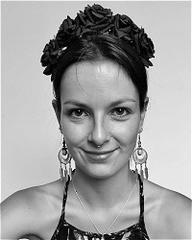
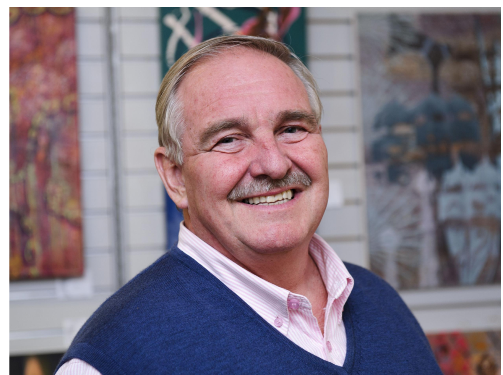
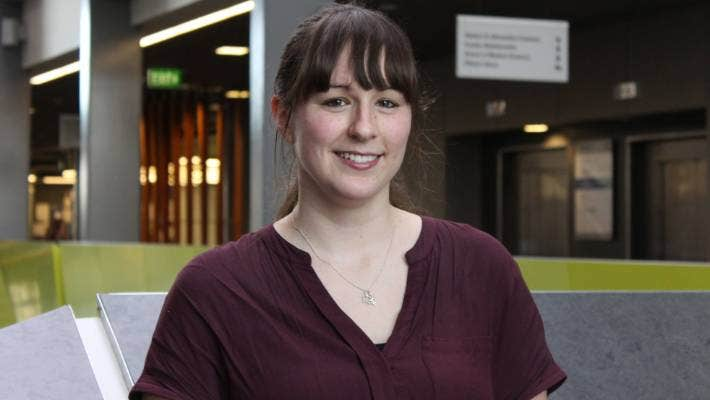

CPNS Lab
Computational Psychiatry & Neuropharmacological Systems (CPNS) · University of Exeter
Mechanistic modelling for mind, brain, and intelligent systems.
We study predictive coding, neural dynamics, and active inference in computational psychiatry and neuroscience, combining experimental and clinical studies with computational modelling to understand psychiatric disorders and build intelligent agents.
Short intro to Neuro-AI Active Inference slides (PDF)Research
People

Alexander D. Shaw - PI
Computational neuroscience & psychiatry; neuro-inspired AI.

Lio Berndt - Research Associate
My research focuses on computational psychiatry, developing mathematical models and computational frameworks to understand brain dynamics and neural circuit function in psychiatric disorders, with applications toward precision medicine approaches. In my current work I investigate sleep EEG patterns in children at high risk of psychosis, using these mathematical models to understand the synaptic mechanisms underlying sleep disturbances and identify early biomarkers and candidate intervention targets in high-risk neurodevelopment.
Alessia Caccamo - PhD Student
I develop and test mathematical and computational methods for calibrating neural mass models. The aim of my research is to ensure trustworthy inferences about the hidden neural processes encoded in neuroimaging data (M/EEG). I apply these methods to epilepsy, with particular emphasis on treatment strategies and therapeutic mechanisms.
Rosina (Crow) Diebel - PhD Student
My research uses computational models on patient cohorts with the goal of better understanding the pathophysiology underpinning psychiatric disorders and mapping out the biological and neural circuitry of the brain in pursuit of a more concrete and detailed picture of various psychiatric disorders.

Joy Krecke - PhD Student
Ketamine and mu-opioid receptor modelling.
Victoria Smart - PhD Student
Computational Modelling of the Pharmacodynamics of Psychedelics.
Ella Jackson-Drexler - Project Student
My third year research project investigates moral cognition (Universal Moral Grammar theory) using computational methods. Specifically, I am looking at neural mechanisms underlying moral judgements in participants with varying levels of psychiatric and neurodevelopmental disorders.
Zhihao Deng - PhD Student
Predictive coding and psychiatric disorders.
Olivia Hill-Cousins - PhD Student
My research contributes to the field of
Computational Ethics
and the ongoing discourse surrounding the design and assessment of ethical AI systems.
Specifically, I am investigating the computational processes underpinning human moral judgements towards AI decision-making (versus human decision-making).
I use computational methods to test and analyse the explainability of moral cognitive models (the moral grammar model).
The understanding gained from this, can help inform whether developing ethical AI, based on human moral cognition, could be a globally accepted solution.
Vacancy - Funded PhD
GABA Labs: neurophysiology of GABAergic functional drinks.
Collaborators
-
Prof Marc Goodfellow Exeter
-
Prof Matt Jones Bristol
-
Prof Krish Singh Cardiff
-
Prof Celia Morgan Exeter
-
Prof Karl Friston Verses.ai
-
Prof Jeremy Hall Cardiff
-

Prof David Nutt GABA Labs
-
Dr Joe Sweetman Exeter
-
Prof James Rowe Cambridge
-

Dr Rachael Sumner Auckland
-
Dr Dom Dunstan Exeter
Publications
See
Google Scholar
for the full list.
Computational & AI Manuscripts
- Toward a reusable architecture for intelligent agents.
- A Neuro‑Inspired Computational Framework for AGI: Predictive Coding, Active Inference, and Free Energy Minimisation. OSF, 2025.
- Predictive Coding and Neurocomputational Psychiatry: A Mechanistic Framework for Understanding Mental Disorders.
Experimental, Clinical & Comp Neuro Manuscripts showing recent only
- Dynamics-Informed Priors (DIP) for Neural Mass Modelling BioRxiv Preprint, 2025.
- Females with epilepsy show abnormal changes to perimenstrual sensory induced long-term potentiation BioRxiv Preprint, 2025.
- Sleep as a window into thalamocortical pathology: generative modeling implicates NMDA receptor hypofunction in 22q11.2 deletion syndrome MedRxiv Preprint, 2025.
- Restoring Synaptic Balance in Schizophrenia: Insights from a thalamo-cortical conductance-based model Schizophrenia Bulletin, 2025.
- GABAergic modulation of beta power enhances motor adaptation in frontotemporal lobar degeneration Alzheimer's and Dementia, 2025.
- WAND: A multi‑modal dataset integrating advanced MRI, MEG, and TMS for multi‑scale brain analysis. Nature Scientific Data, 2025.
- Neurophysiological evidence that frontoparietal connectivity and GABA-A receptor changes underpin the antidepressant response to ketamine. Nature Translational Psychiatry, 2024.
- Modulation of long‑term potentiation following microdoses of LSD captured by thalamo‑cortical modelling in a randomised, controlled trial. BMC Neuroscience, 2024.
- Changes in Visual Long-Term Potentiation Show Preserved Cyclicity in Human Females Taking Combined Oral Contraceptives. Neuroendocrinology, 2023.
- Neurophysiological consequences of synapse loss in progressive supranuclear palsy. Brain, 2022.
- GABAergic cortical network physiology in frontotemporal lobar degeneration". Brain, 2022.
- A comparison of GABA‑ergic (propofol) and non‑GABA‑ergic (dexmedetomidine) sedation on visual and motor cortical oscillations, using MEG. NeuroImage, 2021.
- Tiagabine‑induced modulation of oscillatory connectivity and activity matches PET‑derived GABAA receptor distributions. European Neuropsychopharmacology, 2021.
- Dopamine and Glutamate in Antipsychotic-Responsive Compared With Antipsychotic-Nonresponsive Psychosis: A Multicenter Positron Emission Tomography and Magnetic Resonance Spectroscopy Study (STRATA). Schiophrenia Bulletin, 2021.
- Modelling thalamocortical circuitry shows that visually induced LTP changes laminar connectivity in human visual cortex. PLOS Computational Biology, 2021.
- Generative modelling of thalamo‑cortical mechanisms underlying ketamine effects on oscillations. NeuroImage, 2020.
- Juvenile myoclonic epilepsy shows increased posterior theta, and reduced sensorimotor beta resting connectivity. Epilepsy Research, 2020.
- GABA-ergic Dynamics in Human Frontotemporal Networks Confirmed by Pharmaco-Magnetoencephalography. The Journal of Neuroscience, 2020.
- Oscillatory, Computational, and Behavioral Evidence for Impaired GABAergic Inhibition in Schizophrenia. Schizophrenia Bulletin, 2020.
- In Vivo Assay of Cortical Microcircuitry in Frontotemporal Dementia: A Platform for Experimental Medicine Studies. Cerebral Cortex, 2020.
Funding & Partners
Work with us
Students · Postdocs · Industry
We collaborate on computational psychiatry, neuro-inspired AI, and MEG/EEG generative modelling. We welcome PhD applicants, postdocs, clinical/industry partners, and short consultancy projects.
- Co-develop projects (data + modelling + translation)
- Contract research & joint studentships
- Methodology: Variational Laplace, DCM, active inference agents
- In-silico neuropharmacology assays; functional drinks
- Active inference approaches to AGI
Openings
We welcome motivated students and collaborators. If you enjoy dynamical systems, Bayesian inference, or building agents that think, reach out.
- PhD projects: Computational psychiatry; active inference agents; thalamo‑cortical modelling; neurobiology of psychedelics.
- Postdoc: Variational methods for neural and AI systems (MATLAB/Python/Julia).
Contact
Email: A.D.Shaw@exeter.ac.uk
School of Psychology, University of Exeter · Exeter, UK